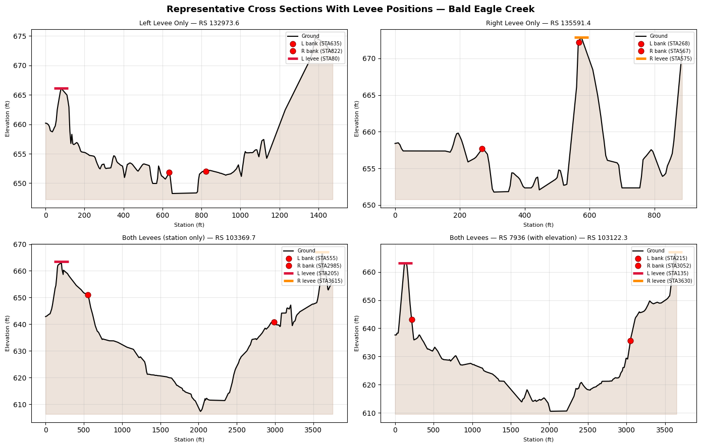
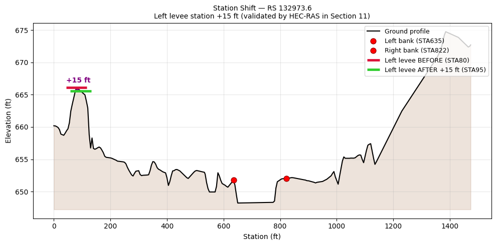
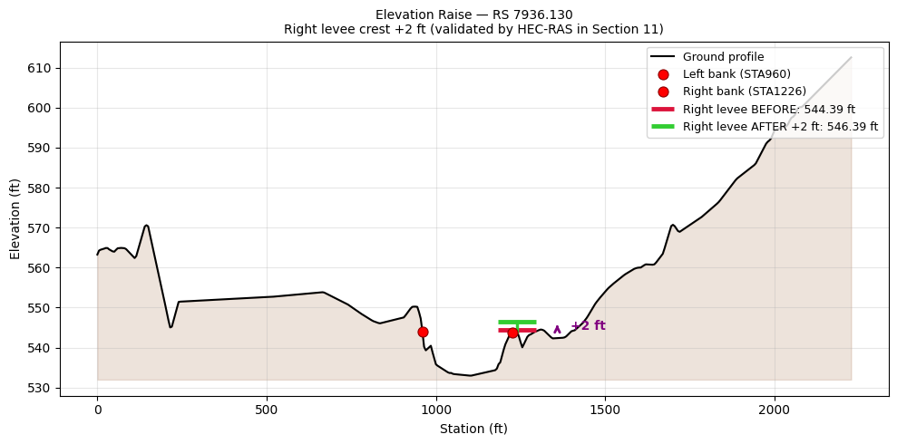

1D Cross-Section Levee Authoring¶
Read, modify, insert, and remove cross-section levee station-elevation data in a real HEC-RAS geometry file, then run the unsteady simulation on the modified geometry and verify results extraction from the HDF output.
Example Project: Bald Eagle Creek (1D Unsteady Flow Hydraulics)
Overview¶
HEC-RAS 1D cross sections can have left and/or right levee points defined as station-elevation pairs. These control when water overtops the levee and enters the floodplain.
Storage format: Each cross section's levee data is stored on a single Levee= line in the .g## text file:
-1 with station and elevation values
- Inactive sides use flag 0 with blank station/elevation fields
Blank vs. explicit elevation - two distinct behaviors:
| Elevation field | Solver overtopping threshold | RASMapper flood polygon clipping |
|---|---|---|
| Blank (NaN) | Ground elevation at levee station, interpolated from XS profile | Inactive -- HDF Levees dataset not written |
| Explicit (e.g., 544.39 ft) | Defined crest elevation | Active -- HDF Levees dataset written, polygon boundary clipped |
Note: Never write
0.0when you mean "no elevation defined." Zero is a valid elevation and will be treated as an explicit 0 ft crest -- use NaN to produce a blank field. In Bald Eagle Creek, 40 of 41 active levees have blank elevation -- the standard pattern for 1D models where the ground profile serves as the levee crest.
API methods:
- get_levees() — Read all levee data as a DataFrame
- set_levees() — Write levee data for a single cross section (update or insert)
1. Setup and Imports¶
# =============================================================================
# DEVELOPMENT MODE TOGGLE
# =============================================================================
USE_LOCAL_SOURCE = False
if USE_LOCAL_SOURCE:
import sys
from pathlib import Path
cwd = Path.cwd()
local_path = cwd if (cwd / "ras_commander").exists() else cwd.parent
if str(local_path) not in sys.path:
sys.path.insert(0, str(local_path))
print(f"LOCAL SOURCE MODE: loading from {local_path / 'ras_commander'}")
else:
print("PIP PACKAGE MODE: loading installed ras-commander")
from pathlib import Path
import logging
import os
import re
import warnings
import pandas as pd
import numpy as np
import shutil
from IPython.display import display
from ras_commander import RasExamples
from ras_commander.geom.GeomCrossSection import GeomCrossSection
warnings.filterwarnings("ignore", category=FutureWarning)
logging.getLogger("ras_commander").setLevel(logging.CRITICAL)
pd.set_option("display.max_columns", None)
pd.set_option("display.max_colwidth", 120)
import ras_commander
print(f"Loaded: {ras_commander.__file__}")
PIP PACKAGE MODE: loading installed ras-commander
Loaded: G:\GH\ras-commander\ras_commander\__init__.py
2. Extract Example Project¶
project_path = RasExamples.extract_project("Balde Eagle Creek")
geom_file = project_path / "BaldEagle.g01"
print(f"Project: {project_path}")
print(f"Geometry file exists: {geom_file.exists()}")
Project: G:\GH\ras-commander\working\notebook_runs\20260518_185328_217_levee\example_projects\Balde Eagle Creek
Geometry file exists: True
3. Read All Levees¶
get_levees() returns a DataFrame with columns: xs_id, River, Reach, RS, left_station, left_elevation, right_station, right_elevation. Cross sections without levees have NaN values.
all_levees = GeomCrossSection.get_levees(geom_file)
total_xs = len(all_levees)
has_left = all_levees["left_station"].notna().sum()
has_right = all_levees["right_station"].notna().sum()
has_both = (all_levees["left_station"].notna() & all_levees["right_station"].notna()).sum()
has_none = (all_levees["left_station"].isna() & all_levees["right_station"].isna()).sum()
print(f"Total cross sections: {total_xs}")
print(f" With left levee: {has_left}")
print(f" With right levee: {has_right}")
print(f" With both sides: {has_both}")
print(f" With no levees: {has_none}")
print(f"\nColumns: {list(all_levees.columns)}")
print(f"\nFirst 15 rows:")
all_levees.head(15)
Total cross sections: 189
With left levee: 28
With right levee: 18
With both sides: 5
With no levees: 148
Columns: ['xs_id', 'River', 'Reach', 'RS', 'left_station', 'left_elevation', 'right_station', 'right_elevation']
First 15 rows:
| xs_id | River | Reach | RS | left_station | left_elevation | right_station | right_elevation | |
|---|---|---|---|---|---|---|---|---|
| 0 | Bald Eagle|Loc Hav|138154.4 | Bald Eagle | Loc Hav | 138154.4 | NaN | NaN | NaN | NaN |
| 1 | Bald Eagle|Loc Hav|137690.8 | Bald Eagle | Loc Hav | 137690.8 | NaN | NaN | NaN | NaN |
| 2 | Bald Eagle|Loc Hav|137327.0 | Bald Eagle | Loc Hav | 137327.0 | NaN | NaN | NaN | NaN |
| 3 | Bald Eagle|Loc Hav|136564.9 | Bald Eagle | Loc Hav | 136564.9 | NaN | NaN | NaN | NaN |
| 4 | Bald Eagle|Loc Hav|136202.3 | Bald Eagle | Loc Hav | 136202.3 | NaN | NaN | NaN | NaN |
| 5 | Bald Eagle|Loc Hav|135591.4 | Bald Eagle | Loc Hav | 135591.4 | NaN | NaN | 574.99 | NaN |
| 6 | Bald Eagle|Loc Hav|135068.7 | Bald Eagle | Loc Hav | 135068.7 | NaN | NaN | NaN | NaN |
| 7 | Bald Eagle|Loc Hav|134487.2 | Bald Eagle | Loc Hav | 134487.2 | NaN | NaN | NaN | NaN |
| 8 | Bald Eagle|Loc Hav|133881.0 | Bald Eagle | Loc Hav | 133881.0 | NaN | NaN | NaN | NaN |
| 9 | Bald Eagle|Loc Hav|133446.1 | Bald Eagle | Loc Hav | 133446.1 | NaN | NaN | NaN | NaN |
| 10 | Bald Eagle|Loc Hav|132973.6 | Bald Eagle | Loc Hav | 132973.6 | 80.0 | NaN | NaN | NaN |
| 11 | Bald Eagle|Loc Hav|132363.8 | Bald Eagle | Loc Hav | 132363.8 | NaN | NaN | NaN | NaN |
| 12 | Bald Eagle|Loc Hav|131699.7 | Bald Eagle | Loc Hav | 131699.7 | NaN | NaN | NaN | NaN |
| 13 | Bald Eagle|Loc Hav|130997.6 | Bald Eagle | Loc Hav | 130997.6 | NaN | NaN | NaN | NaN |
| 14 | Bald Eagle|Loc Hav|130339.2 | Bald Eagle | Loc Hav | 130339.2 | 100.0 | NaN | NaN | NaN |
4. Filter by River/Reach/RS¶
Use optional river, reach, and rs parameters to narrow the query.
river_name = all_levees["River"].iloc[0]
reach_name = all_levees["Reach"].iloc[0]
print(f"River: {river_name}, Reach: {reach_name}")
# Filter to just cross sections with active levees
active_levees = all_levees[
all_levees["left_station"].notna() | all_levees["right_station"].notna()
].copy()
print(f"\nActive levee cross sections ({len(active_levees)} of {total_xs}):")
active_levees[["xs_id", "left_station", "left_elevation", "right_station", "right_elevation"]]
River: Bald Eagle, Reach: Loc Hav
Active levee cross sections (41 of 189):
| xs_id | left_station | left_elevation | right_station | right_elevation | |
|---|---|---|---|---|---|
| 5 | Bald Eagle|Loc Hav|135591.4 | NaN | NaN | 574.99 | NaN |
| 10 | Bald Eagle|Loc Hav|132973.6 | 80.0 | NaN | NaN | NaN |
| 14 | Bald Eagle|Loc Hav|130339.2 | 100.0 | NaN | NaN | NaN |
| 18 | Bald Eagle|Loc Hav|127410.9 | NaN | NaN | 2349.99 | NaN |
| 19 | Bald Eagle|Loc Hav|126741.0 | NaN | NaN | 1935.00 | NaN |
| 52 | Bald Eagle|Loc Hav|104647.2 | NaN | NaN | 3488.00 | NaN |
| 53 | Bald Eagle|Loc Hav|104195.0 | NaN | NaN | 3068.00 | NaN |
| 54 | Bald Eagle|Loc Hav|103854.0 | NaN | NaN | 3285.00 | NaN |
| 55 | Bald Eagle|Loc Hav|103369.7 | 205.0 | NaN | 3615.00 | NaN |
| 57 | Bald Eagle|Loc Hav|103122.3 | 135.0 | NaN | 3630.00 | NaN |
| 58 | Bald Eagle|Loc Hav|101440.3 | NaN | NaN | 3795.00 | NaN |
| 59 | Bald Eagle|Loc Hav|100657.3 | NaN | NaN | 3800.00 | NaN |
| 60 | Bald Eagle|Loc Hav|99452.75 | NaN | NaN | 3945.00 | NaN |
| 61 | Bald Eagle|Loc Hav|98206.87 | NaN | NaN | 3850.00 | NaN |
| 62 | Bald Eagle|Loc Hav|97607.35 | NaN | NaN | 2865.00 | NaN |
| 78 | Bald Eagle|Loc Hav|81084.18 | NaN | NaN | 2025.00 | NaN |
| 79 | Bald Eagle|Loc Hav|80500.50 | NaN | NaN | 1595.00 | NaN |
| 153 | Bald Eagle|Loc Hav|22982.97 | 10.0 | NaN | NaN | NaN |
| 154 | Bald Eagle|Loc Hav|22386.15 | 185.0 | NaN | NaN | NaN |
| 155 | Bald Eagle|Loc Hav|21283.34 | 310.0 | NaN | NaN | NaN |
| 157 | Bald Eagle|Loc Hav|21199.93 | 295.0 | NaN | NaN | NaN |
| 158 | Bald Eagle|Loc Hav|20127.30 | 670.0 | NaN | NaN | NaN |
| 159 | Bald Eagle|Loc Hav|19036.24 | 895.0 | NaN | NaN | NaN |
| 160 | Bald Eagle|Loc Hav|18200.10 | 395.0 | NaN | NaN | NaN |
| 161 | Bald Eagle|Loc Hav|17549.23 | 225.0 | NaN | NaN | NaN |
| 162 | Bald Eagle|Loc Hav|16787.45 | 185.0 | NaN | NaN | NaN |
| 163 | Bald Eagle|Loc Hav|15407.88 | 430.0 | NaN | 820.00 | NaN |
| 165 | Bald Eagle|Loc Hav|14814.34 | 340.0 | NaN | 720.00 | NaN |
| 166 | Bald Eagle|Loc Hav|13326.74 | 210.0 | NaN | NaN | NaN |
| 167 | Bald Eagle|Loc Hav|12035.22 | 965.0 | NaN | NaN | NaN |
| 169 | Bald Eagle|Loc Hav|11865.80 | 225.0 | NaN | NaN | NaN |
| 170 | Bald Eagle|Loc Hav|11116.44 | 465.0 | NaN | NaN | NaN |
| 171 | Bald Eagle|Loc Hav|10995.73 | 440.0 | NaN | NaN | NaN |
| 172 | Bald Eagle|Loc Hav|10221.14 | 85.0 | NaN | NaN | NaN |
| 173 | Bald Eagle|Loc Hav|9258.941 | 135.0 | NaN | NaN | NaN |
| 174 | Bald Eagle|Loc Hav|8541.462 | 110.0 | NaN | NaN | NaN |
| 175 | Bald Eagle|Loc Hav|7936.130 | 145.0 | NaN | 1240.02 | 544.39 |
| 176 | Bald Eagle|Loc Hav|6940.066 | 165.0 | NaN | NaN | NaN |
| 177 | Bald Eagle|Loc Hav|6267.489 | 200.0 | NaN | NaN | NaN |
| 178 | Bald Eagle|Loc Hav|5523.234 | 210.0 | NaN | NaN | NaN |
| 179 | Bald Eagle|Loc Hav|4293.710 | 5.0 | NaN | NaN | NaN |
# Read a single cross section by xs_id
target_xs = active_levees["xs_id"].iloc[0]
single = GeomCrossSection.get_levees(geom_file, xs_id=target_xs)
print(f"Single cross section: {target_xs}")
single
Single cross section: Bald Eagle|Loc Hav|135591.4
| xs_id | River | Reach | RS | left_station | left_elevation | right_station | right_elevation | |
|---|---|---|---|---|---|---|---|---|
| 0 | Bald Eagle|Loc Hav|135591.4 | Bald Eagle | Loc Hav | 135591.4 | NaN | NaN | 574.99 | NaN |
5. Update Existing Levees (Round-Trip)¶
set_levees() updates the Levee= line for a specific cross section. A levee point has two independent properties:
- Station — horizontal position in the cross section (ft from the left edge)
- Elevation — overtopping elevation (ft NAVD88); if not set (NaN), HEC-RAS uses the ground elevation at the levee station
We demonstrate three round-trip operations: - 5a. Move station — shift the left levee outward +10 ft - 5b. Raise elevation — increase the right levee crest by +2 ft (RS 7936.130, the only cross section in this project with a defined levee elevation) - 5c. Lower elevation — lower the right levee crest by −2 ft from original
# Create a working copy
work_copy = project_path / "BaldEagle_levee_test.g01"
shutil.copy(geom_file, work_copy)
print(f"Working copy: {work_copy.name}")
# ── 5a. Move levee station ──────────────────────────────────────────────────
both_sides = active_levees[
active_levees["left_station"].notna() & active_levees["right_station"].notna()
]
target_sta = both_sides["xs_id"].iloc[0]
orig_sta = GeomCrossSection.get_levees(work_copy, xs_id=target_sta)
new_left = orig_sta["left_station"].iloc[0] + 10.0
GeomCrossSection.set_levees(
work_copy, xs_id=target_sta,
left_station=new_left,
right_station=orig_sta["right_station"].iloc[0],
create_backup=False,
)
after_sta = GeomCrossSection.get_levees(work_copy, xs_id=target_sta)
assert np.isclose(after_sta["left_station"].iloc[0], new_left)
print(f"5a. Station moved: {target_sta}")
print(f" Left: {orig_sta['left_station'].iloc[0]:.1f} → {after_sta['left_station'].iloc[0]:.1f} ft (+10 ft)")
# ── 5b. Raise levee elevation ───────────────────────────────────────────────
# RS 7936.130 has the only real right_elevation in this project (544.39 ft)
elev_xs_id = "Bald Eagle|Loc Hav|7936.130"
orig_elev_row = GeomCrossSection.get_levees(work_copy, xs_id=elev_xs_id)
orig_left_sta = orig_elev_row["left_station"].iloc[0] # 145.0
orig_right_sta = orig_elev_row["right_station"].iloc[0] # 1240.02
orig_right_elev = orig_elev_row["right_elevation"].iloc[0] # 544.39
raised_elev = orig_right_elev + 2.0 # 546.39
GeomCrossSection.set_levees(
work_copy, xs_id=elev_xs_id,
left_station=orig_left_sta,
right_station=orig_right_sta,
right_elevation=raised_elev,
create_backup=False,
)
after_raise = GeomCrossSection.get_levees(work_copy, xs_id=elev_xs_id)
assert np.isclose(after_raise["right_elevation"].iloc[0], raised_elev)
print(f"\n5b. Elevation raised: {elev_xs_id}")
print(f" Right elev: {orig_right_elev:.2f} → {after_raise['right_elevation'].iloc[0]:.2f} ft (+2.00 ft)")
# ── 5c. Lower levee elevation ───────────────────────────────────────────────
lowered_elev = orig_right_elev - 2.0 # 542.39
GeomCrossSection.set_levees(
work_copy, xs_id=elev_xs_id,
left_station=orig_left_sta,
right_station=orig_right_sta,
right_elevation=lowered_elev,
create_backup=False,
)
after_lower = GeomCrossSection.get_levees(work_copy, xs_id=elev_xs_id)
assert np.isclose(after_lower["right_elevation"].iloc[0], lowered_elev)
print(f"\n5c. Elevation lowered: {elev_xs_id}")
print(f" Right elev: {orig_right_elev:.2f} → {after_lower['right_elevation'].iloc[0]:.2f} ft (-2.00 ft)")
# Restore original elevation so downstream sections read the unmodified project
GeomCrossSection.set_levees(
work_copy, xs_id=elev_xs_id,
left_station=orig_left_sta,
right_station=orig_right_sta,
right_elevation=orig_right_elev,
create_backup=False,
)
restored = GeomCrossSection.get_levees(work_copy, xs_id=elev_xs_id)
assert np.isclose(restored["right_elevation"].iloc[0], orig_right_elev)
print(f"\nRestored to original: {restored['right_elevation'].iloc[0]:.2f} ft")
print(f"\n✓ Station shift, elevation raise, and elevation lower all round-trip verified")
Working copy: BaldEagle_levee_test.g01
5a. Station moved: Bald Eagle|Loc Hav|103369.7
Left: 205.0 → 215.0 ft (+10 ft)
5b. Elevation raised: Bald Eagle|Loc Hav|7936.130
Right elev: 544.39 → 546.39 ft (+2.00 ft)
5c. Elevation lowered: Bald Eagle|Loc Hav|7936.130
Right elev: 544.39 → 542.39 ft (-2.00 ft)
Restored to original: 544.39 ft
✓ Station shift, elevation raise, and elevation lower all round-trip verified
6. Insert Levees into a Cross Section Without Them¶
When a cross section has no Levee= line, set_levees() inserts one after the Manning's n data block.
# Find a cross section with no levees
all_work = GeomCrossSection.get_levees(work_copy)
no_levees = all_work[
all_work["left_station"].isna() & all_work["right_station"].isna()
]
insert_target = no_levees["xs_id"].iloc[0]
print(f"Cross section with no levees: {insert_target}")
# Insert a right-side-only levee (station + elevation)
GeomCrossSection.set_levees(
work_copy,
xs_id=insert_target,
right_station=500.0,
right_elevation=650.0,
create_backup=False,
)
# Verify insertion
inserted = GeomCrossSection.get_levees(work_copy, xs_id=insert_target)
print(f"\nAfter insertion:")
print(f" Left: station={inserted['left_station'].iloc[0]} (inactive)")
print(f" Right: station={inserted['right_station'].iloc[0]}, elevation={inserted['right_elevation'].iloc[0]}")
assert np.isnan(inserted["left_station"].iloc[0]), "Left should be inactive"
assert np.isclose(inserted["right_station"].iloc[0], 500.0), "Right station mismatch"
assert np.isclose(inserted["right_elevation"].iloc[0], 650.0), "Right elevation mismatch"
print(f"✓ Right-only levee inserted successfully")
Cross section with no levees: Bald Eagle|Loc Hav|138154.4
After insertion:
Left: station=nan (inactive)
Right: station=500.0, elevation=650.0
✓ Right-only levee inserted successfully
7. Remove a Levee Side¶
Omit station/elevation for a side to deactivate it. Here we take a cross section with both sides and deactivate the left.
# Pick a cross section that currently has both sides
current = GeomCrossSection.get_levees(work_copy)
both_now = current[
current["left_station"].notna() & current["right_station"].notna()
]
deactivate_target = both_now["xs_id"].iloc[0]
before = GeomCrossSection.get_levees(work_copy, xs_id=deactivate_target)
print(f"Before (both sides active):")
print(f" Left: station={before['left_station'].iloc[0]}")
print(f" Right: station={before['right_station'].iloc[0]}")
# Keep only the right side
GeomCrossSection.set_levees(
work_copy,
xs_id=deactivate_target,
right_station=before["right_station"].iloc[0],
create_backup=False,
)
after = GeomCrossSection.get_levees(work_copy, xs_id=deactivate_target)
print(f"\nAfter (left deactivated):")
print(f" Left: station={after['left_station'].iloc[0]}")
print(f" Right: station={after['right_station'].iloc[0]}")
assert np.isnan(after["left_station"].iloc[0]), "Left should now be inactive"
assert np.isclose(after["right_station"].iloc[0], before["right_station"].iloc[0]), "Right station changed"
print(f"✓ Left levee deactivated, right preserved")
Before (both sides active):
Left: station=215.0
Right: station=3615.0
After (left deactivated):
Left: station=nan
Right: station=3615.0
✓ Left levee deactivated, right preserved
8. Identify by River/Reach/RS Instead of xs_id¶
Both get_levees() and set_levees() accept river, reach, and rs parameters as an alternative to xs_id.
# Pick a cross section and use river/reach/rs addressing
sample = active_levees.iloc[1]
river_val = sample["River"]
reach_val = sample["Reach"]
rs_val = sample["RS"]
print(f"Querying by river={river_val}, reach={reach_val}, rs={rs_val}")
by_rrs = GeomCrossSection.get_levees(
geom_file,
river=river_val,
reach=reach_val,
rs=rs_val,
)
print(f"\nResult:")
by_rrs
Querying by river=Bald Eagle, reach=Loc Hav, rs=132973.6
Result:
| xs_id | River | Reach | RS | left_station | left_elevation | right_station | right_elevation | |
|---|---|---|---|---|---|---|---|---|
| 0 | Bald Eagle|Loc Hav|132973.6 | Bald Eagle | Loc Hav | 132973.6 | 80.0 | NaN | NaN | NaN |
9. Batch Analysis: Levee Elevation Summary¶
Use the DataFrame output for bulk analysis across the entire geometry.
# Compute summary statistics for active levees
active = all_levees[
all_levees["left_station"].notna() | all_levees["right_station"].notna()
].copy()
print(f"Levee elevation statistics (active cross sections only):")
print(f"\nLeft levees ({active['left_station'].notna().sum()} active):")
if active["left_elevation"].notna().any():
print(f" Min elevation: {active['left_elevation'].min():.2f}")
print(f" Max elevation: {active['left_elevation'].max():.2f}")
print(f" Mean elevation: {active['left_elevation'].mean():.2f}")
print(f" Station range: {active['left_station'].min():.2f} to {active['left_station'].max():.2f}")
print(f"\nRight levees ({active['right_station'].notna().sum()} active):")
if active["right_elevation"].notna().any():
print(f" Min elevation: {active['right_elevation'].min():.2f}")
print(f" Max elevation: {active['right_elevation'].max():.2f}")
print(f" Mean elevation: {active['right_elevation'].mean():.2f}")
print(f" Station range: {active['right_station'].min():.2f} to {active['right_station'].max():.2f}")
Levee elevation statistics (active cross sections only):
Left levees (28 active):
Right levees (18 active):
Min elevation: 544.39
Max elevation: 544.39
Mean elevation: 544.39
Station range: 574.99 to 3945.00
10. Cross-Section Profiles With Levee Positions¶
Visualize representative cross sections before and after the levee modifications that will be validated by the HEC-RAS compute in Section 11.
Figure conventions: - Red dots -- bank stations placed at ground elevation (matches HEC-RAS GUI style) - Flat bar at ground -- blank-elevation levee; HEC-RAS interpolates the ground profile at that station and uses it as the overtopping threshold; RASMapper does not write a flood polygon boundary - T-shape (vertical stem + horizontal cap) -- explicit-elevation levee; the cap marks the defined crest elevation, the stem shows the embankment height above terrain; RASMapper activates flood polygon clipping at this boundary
import matplotlib.pyplot as plt
# ── Marker helpers ────────────────────────────────────────────────────────────
def _ground_elev(station, sta_arr, elev_arr):
"""Interpolate ground elevation at a station from the XS profile."""
return float(np.interp(station, sta_arr, elev_arr))
def _bank_dot(ax, station, sta_arr, elev_arr, label=None, size=8):
"""Red dot at (station, ground elevation) — matches HEC-RAS GUI style."""
y = _ground_elev(station, sta_arr, elev_arr)
ax.plot(station, y, "o", color="red", markersize=size, zorder=6,
markeredgecolor="darkred", markeredgewidth=0.8, label=label)
def _levee_bar(ax, station, elevation, sta_arr, elev_arr, color, lw=3.5,
label=None, width_frac=0.025):
"""Blank elevation -> flat bar at ground. Explicit elevation -> T-shape (stem + cap)."""
ground_y = _ground_elev(station, sta_arr, elev_arr)
half_w = (sta_arr.max() - sta_arr.min()) * width_frac
if np.isnan(elevation):
# Blank-elevation levee: flat bar at ground (solver uses interpolated ground crest)
ax.plot([station - half_w, station + half_w], [ground_y, ground_y],
color=color, linewidth=lw, solid_capstyle="butt", zorder=5, label=label)
else:
# Explicit-elevation levee: T-shape showing embankment above terrain
ax.plot([station, station], [ground_y, elevation],
color=color, linewidth=lw * 0.7, zorder=5)
ax.plot([station - half_w, station + half_w], [elevation, elevation],
color=color, linewidth=lw, solid_capstyle="butt", zorder=5, label=label)
# ── Select representative cross sections ─────────────────────────────────────
xs_left_only = active_levees[
active_levees["left_station"].notna() & active_levees["right_station"].isna()
].iloc[0]
xs_right_only = active_levees[
active_levees["right_station"].notna() & active_levees["left_station"].isna()
].iloc[0]
_both = active_levees[
active_levees["left_station"].notna() & active_levees["right_station"].notna()
]
xs_both_1 = _both.iloc[0]
xs_both_2 = _both.iloc[1] # RS 7936.130 — has actual right_elevation
modify_sta_row = active_levees[active_levees["left_station"].notna()].iloc[0]
modify_elev_row = active_levees[active_levees["right_elevation"].notna()].iloc[0]
orig_left_sta = modify_sta_row["left_station"]
new_left_sta = orig_left_sta + 15.0
orig_right_elev = modify_elev_row["right_elevation"]
new_right_elev = orig_right_elev + 2.0
# ── Figure 1: Four representative cross sections ─────────────────────────────
fig, axes = plt.subplots(2, 2, figsize=(14, 9))
fig.suptitle(
"Representative Cross Sections With Levee Positions — Bald Eagle Creek",
fontsize=13, fontweight="bold",
)
configs = [
(xs_left_only, "Left Levee Only"),
(xs_right_only, "Right Levee Only"),
(xs_both_1, "Both Levees (station only)"),
(xs_both_2, "Both Levees — RS 7936 (with elevation)"),
]
for ax, (row, title) in zip(axes.flat, configs):
try:
se_df = GeomCrossSection.get_station_elevation(
geom_file, row["River"], row["Reach"], str(row["RS"]))
banks = GeomCrossSection.get_bank_stations(
geom_file, row["River"], row["Reach"], str(row["RS"]))
sta = se_df["Station"].values
elev = se_df["Elevation"].values
ax.fill_between(sta, elev.min() - 1, elev, alpha=0.15, color="saddlebrown")
ax.plot(sta, elev, "k-", linewidth=1.5, label="Ground")
if banks:
lb, rb = banks
_bank_dot(ax, lb, sta, elev, label=f"L bank (STA{lb:.0f})")
_bank_dot(ax, rb, sta, elev, label=f"R bank (STA{rb:.0f})")
if pd.notna(row["left_station"]):
left_elev = row.get("left_elevation", np.nan)
_levee_bar(ax, row["left_station"], left_elev, sta, elev,
color="crimson",
label=f"L levee (STA{row['left_station']:.0f}"
+ (f", {left_elev:.1f} ft)" if pd.notna(left_elev) else ")"))
if pd.notna(row["right_station"]):
right_elev = row.get("right_elevation", np.nan)
_levee_bar(ax, row["right_station"], right_elev, sta, elev,
color="darkorange",
label=f"R levee (STA{row['right_station']:.0f}"
+ (f", {right_elev:.1f} ft)" if pd.notna(right_elev) else ")"))
ax.set_title(f"{title} — RS {row['RS']}", fontsize=9)
ax.set_xlabel("Station (ft)", fontsize=8)
ax.set_ylabel("Elevation (ft)", fontsize=8)
ax.legend(fontsize=7, loc="upper right")
ax.grid(True, alpha=0.3)
except Exception as e:
ax.text(0.5, 0.5, f"Error: {e}", transform=ax.transAxes, ha="center")
plt.tight_layout()
plt.show()
# ── Figure 2: Before/After — station shift (RS 132973.6) ─────────────────────
se_m = GeomCrossSection.get_station_elevation(
geom_file, modify_sta_row["River"], modify_sta_row["Reach"], str(modify_sta_row["RS"]))
banks_m = GeomCrossSection.get_bank_stations(
geom_file, modify_sta_row["River"], modify_sta_row["Reach"], str(modify_sta_row["RS"]))
sta_m = se_m["Station"].values
elev_m = se_m["Elevation"].values
fig, ax = plt.subplots(figsize=(10, 5))
ax.fill_between(sta_m, elev_m.min() - 1, elev_m, alpha=0.15, color="saddlebrown")
ax.plot(sta_m, elev_m, "k-", linewidth=1.5, label="Ground profile")
if banks_m:
lb_m, rb_m = banks_m
_bank_dot(ax, lb_m, sta_m, elev_m, label=f"Left bank (STA{lb_m:.0f})")
_bank_dot(ax, rb_m, sta_m, elev_m, label=f"Right bank (STA{rb_m:.0f})")
_levee_bar(ax, orig_left_sta, np.nan, sta_m, elev_m, color="crimson",
label=f"Left levee BEFORE (STA{orig_left_sta:.0f})")
_levee_bar(ax, new_left_sta, np.nan, sta_m, elev_m, color="limegreen", lw=3.5,
label=f"Left levee AFTER +15 ft (STA{new_left_sta:.0f})")
y_b = _ground_elev(orig_left_sta, sta_m, elev_m)
y_a = _ground_elev(new_left_sta, sta_m, elev_m)
y_arrow = (y_b + y_a) / 2
ax.annotate("", xy=(new_left_sta, y_arrow), xytext=(orig_left_sta, y_arrow),
arrowprops=dict(arrowstyle="->", color="purple", lw=2))
ax.text((orig_left_sta + new_left_sta) / 2,
y_arrow + (elev_m.max() - elev_m.min()) * 0.04,
"+15 ft", ha="center", color="purple", fontsize=10, fontweight="bold")
ax.set_title(f"Station Shift — RS {modify_sta_row['RS']}\n"
"Left levee station +15 ft (validated by HEC-RAS in Section 11)", fontsize=10)
ax.set_xlabel("Station (ft)")
ax.set_ylabel("Elevation (ft)")
ax.legend(fontsize=9, loc="upper right")
ax.grid(True, alpha=0.3)
plt.tight_layout()
plt.show()
print(f"Station shift: {modify_sta_row['xs_id']} | left {orig_left_sta:.1f} → {new_left_sta:.1f} ft")
# ── Figure 3: Before/After — elevation change (RS 7936.130) ──────────────────
se_e = GeomCrossSection.get_station_elevation(
geom_file, modify_elev_row["River"], modify_elev_row["Reach"], str(modify_elev_row["RS"]))
banks_e = GeomCrossSection.get_bank_stations(
geom_file, modify_elev_row["River"], modify_elev_row["Reach"], str(modify_elev_row["RS"]))
sta_e = se_e["Station"].values
elev_e = se_e["Elevation"].values
r_sta = modify_elev_row["right_station"]
fig, ax = plt.subplots(figsize=(10, 5))
ax.fill_between(sta_e, elev_e.min() - 1, elev_e, alpha=0.15, color="saddlebrown")
ax.plot(sta_e, elev_e, "k-", linewidth=1.5, label="Ground profile")
if banks_e:
lb_e, rb_e = banks_e
_bank_dot(ax, lb_e, sta_e, elev_e, label=f"Left bank (STA{lb_e:.0f})")
_bank_dot(ax, rb_e, sta_e, elev_e, label=f"Right bank (STA{rb_e:.0f})")
_levee_bar(ax, r_sta, orig_right_elev, sta_e, elev_e, color="crimson",
label=f"Right levee BEFORE: {orig_right_elev:.2f} ft")
_levee_bar(ax, r_sta, new_right_elev, sta_e, elev_e, color="limegreen", lw=3.5,
label=f"Right levee AFTER +2 ft: {new_right_elev:.2f} ft")
x_ann = r_sta + (sta_e.max() - r_sta) * 0.12
ax.annotate("", xy=(x_ann, new_right_elev), xytext=(x_ann, orig_right_elev),
arrowprops=dict(arrowstyle="->", color="purple", lw=2))
ax.text(x_ann + (sta_e.max() - r_sta) * 0.04,
(orig_right_elev + new_right_elev) / 2,
"+2 ft", ha="left", va="center", color="purple", fontsize=10, fontweight="bold")
ax.set_title(f"Elevation Raise — RS {modify_elev_row['RS']}\n"
"Right levee crest +2 ft (validated by HEC-RAS in Section 11)", fontsize=10)
ax.set_xlabel("Station (ft)")
ax.set_ylabel("Elevation (ft)")
ax.legend(fontsize=9, loc="upper right")
ax.grid(True, alpha=0.3)
plt.tight_layout()
plt.show()
print(f"Elevation raise: {modify_elev_row['xs_id']} | right crest {orig_right_elev:.2f} → {new_right_elev:.2f} ft")


Station shift: Bald Eagle|Loc Hav|132973.6 | left 80.0 → 95.0 ft

Elevation raise: Bald Eagle|Loc Hav|7936.130 | right crest 544.39 → 546.39 ft
if work_copy.exists():
work_copy.unlink()
print(f"Removed demo working copy: {work_copy.name}")
for bak in project_path.glob("BaldEagle_levee_test.g01.bak*"):
bak.unlink()
print(f"Removed backup: {bak.name}")
print("Demo working copy cleaned up before validation.")
Removed demo working copy: BaldEagle_levee_test.g01
Demo working copy cleaned up before validation.
11. Validate Write Format With HEC-RAS Compute¶
The round-trip assertions above confirm Python can read back what it wrote, but the ultimate validation is running HEC-RAS on the modified geometry and confirming the simulation completes without errors.
We extract a fresh project copy, apply two independent levee modifications, then run the unsteady simulation: - Station shift — RS 132973.6 left station +15 ft - Elevation raise — RS 7936.130 right crest elevation +2 ft (544.39 → 546.39 ft)
from ras_commander import init_ras_project, RasCmdr, HdfResultsPlan
logging.getLogger("ras_commander").setLevel(logging.INFO)
# Extract a FRESH project copy for compute validation
WORK_DIR = Path(os.environ.get(
"RAS_COMMANDER_WORKDIR",
project_path.parent / "levee_validation",
))
if WORK_DIR.exists():
shutil.rmtree(WORK_DIR)
WORK_DIR.mkdir(parents=True, exist_ok=True)
fresh_project = RasExamples.extract_project("Balde Eagle Creek", output_path=WORK_DIR, suffix="validate")
fresh_geom = fresh_project / "BaldEagle.g01"
assert fresh_geom.exists()
# --------------------------------------------------------------------------
# Modification 1: Shift left levee station on RS 132973.6 (+15 ft).
# --------------------------------------------------------------------------
fresh_levees = GeomCrossSection.get_levees(fresh_geom)
active_fresh = fresh_levees[fresh_levees["left_station"].notna()].copy()
sta_xs_id = active_fresh["xs_id"].iloc[0]
orig_sta_levee = GeomCrossSection.get_levees(fresh_geom, xs_id=sta_xs_id)
orig_left_sta = orig_sta_levee["left_station"].iloc[0]
new_left_sta = orig_left_sta + 15.0
GeomCrossSection.set_levees(
fresh_geom, xs_id=sta_xs_id,
left_station=new_left_sta,
create_backup=False,
)
v1 = GeomCrossSection.get_levees(fresh_geom, xs_id=sta_xs_id)
assert np.isclose(v1["left_station"].iloc[0], new_left_sta), "Station mismatch"
print(f"Mod 1 — Station shift: {sta_xs_id}")
print(f" Left station: {orig_left_sta:.1f} → {new_left_sta:.1f} ft")
# --------------------------------------------------------------------------
# Modification 2: Raise right levee elevation on RS 7936.130 (+2 ft).
# --------------------------------------------------------------------------
elev_xs_id_val = "Bald Eagle|Loc Hav|7936.130"
orig_elev_val = GeomCrossSection.get_levees(fresh_geom, xs_id=elev_xs_id_val)
orig_r_sta_val = orig_elev_val["right_station"].iloc[0]
orig_r_elev_val = orig_elev_val["right_elevation"].iloc[0]
orig_l_sta_val = orig_elev_val["left_station"].iloc[0]
new_r_elev_val = orig_r_elev_val + 2.0
GeomCrossSection.set_levees(
fresh_geom, xs_id=elev_xs_id_val,
left_station=orig_l_sta_val,
right_station=orig_r_sta_val,
right_elevation=new_r_elev_val,
create_backup=False,
)
v2 = GeomCrossSection.get_levees(fresh_geom, xs_id=elev_xs_id_val)
assert np.isclose(v2["right_elevation"].iloc[0], new_r_elev_val), "Elevation mismatch"
print(f"\nMod 2 — Elevation raise: {elev_xs_id_val}")
print(f" Right crest: {orig_r_elev_val:.2f} → {v2['right_elevation'].iloc[0]:.2f} ft")
# --------------------------------------------------------------------------
# Run HEC-RAS on the MODIFIED geometry.
# --------------------------------------------------------------------------
ras_val = init_ras_project(fresh_project, "7.0")
plans_using_g01 = ras_val.plan_df[ras_val.plan_df["Geom File"] == "01"]
assert not plans_using_g01.empty, "No plan found using geometry file .g01"
plan_number = plans_using_g01.iloc[0]["plan_number"]
plan_file_path = Path(plans_using_g01.iloc[0]["full_path"])
plan_text = plan_file_path.read_text()
plan_text = re.sub(r"Program Version=.*", f"Program Version={ras_val.ras_version}", plan_text)
plan_file_path.write_text(plan_text)
geom_text = fresh_geom.read_text()
geom_text = re.sub(r"Program Version=.*", f"Program Version={ras_val.ras_version}", geom_text)
fresh_geom.write_text(geom_text)
print(f"\nUpdated Program Version to {ras_val.ras_version}")
print(f"Running Plan {plan_number} with 2 levee modifications...")
RasCmdr.compute_plan(plan_number, ras_object=ras_val, force_geompre=True, num_cores=4)
hdf_path = Path(ras_val.plan_df.loc[
ras_val.plan_df["plan_number"] == plan_number, "HDF_Results_Path"
].iloc[0])
assert hdf_path.exists(), f"HDF file not created for plan {plan_number}"
messages = HdfResultsPlan.get_compute_messages(hdf_path)
lines = messages.splitlines() if messages else []
errors = [l for l in lines if "ERROR" in l.upper()
and "VOLUME ACCOUNTING" not in l.upper()
and "ITERATIONS" not in l.upper()
and "WSEL ERROR" not in l.upper()]
if errors:
print(f"ERRORS ({len(errors)}):")
for e in errors[:10]:
print(f" {e}")
raise RuntimeError(f"HEC-RAS reported {len(errors)} error(s) with modified geometry")
print(f"")
print(f"{'='*70}")
print(f"VALIDATION RESULT")
print(f"{'='*70}")
print(f" Geometry file: {fresh_geom.name} (MODIFIED)")
print(f" Mod 1 (station): {sta_xs_id} left station +15 ft")
print(f" Mod 2 (elev): {elev_xs_id_val} right crest +2 ft")
print(f" HEC-RAS version: {ras_val.ras_version}")
print(f" Plan {plan_number}: Preprocessing + simulation COMPLETED")
print(f" Format errors: {len(errors)}")
print(f" HDF results: {hdf_path.name}")
print(f"{'='*70}")
print(f" set_levees station + elevation write format: VALIDATED")
print(f"{'='*70}")
2026-05-18 18:54:54 - ras_commander.RasExamples - INFO - Successfully extracted project 'Balde Eagle Creek' to G:\GH\ras-commander\working\notebook_runs\20260518_185328_217_levee\example_projects\levee_validation\Balde Eagle Creek_validate
2026-05-18 18:54:54 - ras_commander.geom.GeomCrossSection - INFO - Read levee data for 189 cross sections from G:\GH\ras-commander\working\notebook_runs\20260518_185328_217_levee\example_projects\levee_validation\Balde Eagle Creek_validate\BaldEagle.g01
2026-05-18 18:54:54 - ras_commander.geom.GeomCrossSection - INFO - Read levee data for 1 cross sections from G:\GH\ras-commander\working\notebook_runs\20260518_185328_217_levee\example_projects\levee_validation\Balde Eagle Creek_validate\BaldEagle.g01
2026-05-18 18:54:54 - ras_commander.geom.GeomParser - INFO - Successfully wrote geometry file: G:\GH\ras-commander\working\notebook_runs\20260518_185328_217_levee\example_projects\levee_validation\Balde Eagle Creek_validate\BaldEagle.g01
2026-05-18 18:54:54 - ras_commander.geom.GeomCrossSection - INFO - Updated levees for Bald Eagle/Loc Hav/RS 132973.6
2026-05-18 18:54:54 - ras_commander.geom.GeomCrossSection - INFO - Read levee data for 1 cross sections from G:\GH\ras-commander\working\notebook_runs\20260518_185328_217_levee\example_projects\levee_validation\Balde Eagle Creek_validate\BaldEagle.g01
2026-05-18 18:54:54 - ras_commander.geom.GeomCrossSection - INFO - Read levee data for 1 cross sections from G:\GH\ras-commander\working\notebook_runs\20260518_185328_217_levee\example_projects\levee_validation\Balde Eagle Creek_validate\BaldEagle.g01
2026-05-18 18:54:54 - ras_commander.geom.GeomParser - INFO - Successfully wrote geometry file: G:\GH\ras-commander\working\notebook_runs\20260518_185328_217_levee\example_projects\levee_validation\Balde Eagle Creek_validate\BaldEagle.g01
2026-05-18 18:54:54 - ras_commander.geom.GeomCrossSection - INFO - Updated levees for Bald Eagle/Loc Hav/RS 7936.130
2026-05-18 18:54:54 - ras_commander.geom.GeomCrossSection - INFO - Read levee data for 1 cross sections from G:\GH\ras-commander\working\notebook_runs\20260518_185328_217_levee\example_projects\levee_validation\Balde Eagle Creek_validate\BaldEagle.g01
2026-05-18 18:54:54 - ras_commander.RasUtils - INFO - Discovered HEC-RAS 7.0 at C:\Program Files (x86)\HEC\HEC-RAS\7.0\Ras.exe via filesystem (x86)
2026-05-18 18:54:54 - ras_commander.RasUtils - INFO - Discovered HEC-RAS 6.7 Beta 5 at C:\Program Files (x86)\HEC\HEC-RAS\6.7 Beta 5\Ras.exe via filesystem (x86)
2026-05-18 18:54:54 - ras_commander.RasUtils - INFO - Discovered HEC-RAS 6.5 at C:\Program Files (x86)\HEC\HEC-RAS\6.5\Ras.exe via filesystem (x86)
2026-05-18 18:54:54 - ras_commander.RasUtils - INFO - Discovered HEC-RAS 6.3.1 at C:\Program Files (x86)\HEC\HEC-RAS\6.3.1\Ras.exe via filesystem (x86)
2026-05-18 18:54:54 - ras_commander.RasUtils - INFO - Discovered HEC-RAS 6.2 at C:\Program Files (x86)\HEC\HEC-RAS\6.2\Ras.exe via filesystem (x86)
2026-05-18 18:54:54 - ras_commander.RasUtils - INFO - Discovered HEC-RAS 6.1 at C:\Program Files (x86)\HEC\HEC-RAS\6.1\Ras.exe via filesystem (x86)
2026-05-18 18:54:54 - ras_commander.RasUtils - INFO - Discovered HEC-RAS 6.0 at C:\Program Files (x86)\HEC\HEC-RAS\6.0\Ras.exe via filesystem (x86)
2026-05-18 18:54:54 - ras_commander.RasUtils - INFO - Discovered HEC-RAS 5.0.7 at C:\Program Files (x86)\HEC\HEC-RAS\5.0.7\Ras.exe via filesystem (x86)
2026-05-18 18:54:54 - ras_commander.RasUtils - INFO - Discovered HEC-RAS 5.0.6 at C:\Program Files (x86)\HEC\HEC-RAS\5.0.6\Ras.exe via filesystem (x86)
2026-05-18 18:54:54 - ras_commander.RasUtils - INFO - Discovered HEC-RAS 5.0.5 at C:\Program Files (x86)\HEC\HEC-RAS\5.0.5\Ras.exe via filesystem (x86)
2026-05-18 18:54:54 - ras_commander.RasUtils - INFO - Discovered HEC-RAS 5.0.4 at C:\Program Files (x86)\HEC\HEC-RAS\5.0.4\Ras.exe via filesystem (x86)
2026-05-18 18:54:54 - ras_commander.RasUtils - INFO - Discovered HEC-RAS 5.0.3 at C:\Program Files (x86)\HEC\HEC-RAS\5.0.3\Ras.exe via filesystem (x86)
2026-05-18 18:54:54 - ras_commander.RasUtils - INFO - Discovered HEC-RAS 5.0.1 at C:\Program Files (x86)\HEC\HEC-RAS\5.0.1\Ras.exe via filesystem (x86)
2026-05-18 18:54:54 - ras_commander.RasUtils - INFO - Discovered HEC-RAS 5.0 at C:\Program Files (x86)\HEC\HEC-RAS\5.0\Ras.exe via filesystem (x86)
2026-05-18 18:54:54 - ras_commander.RasUtils - INFO - Discovered HEC-RAS 4.1.0 at C:\Program Files (x86)\HEC\HEC-RAS\4.1.0\Ras.exe via filesystem (x86)
2026-05-18 18:54:54 - ras_commander.RasUtils - INFO - Discovered HEC-RAS 4.0 at C:\Program Files (x86)\HEC\HEC-RAS\4.0\Ras.exe via filesystem (x86)
2026-05-18 18:54:54 - ras_commander.RasUtils - INFO - Discovered HEC-RAS 6.6 at C:\Program Files (x86)\HEC\HEC-RAS\6.6\Ras.exe via filesystem (x86)
2026-05-18 18:54:54 - ras_commander.RasUtils - INFO - Discovered 17 installed HEC-RAS version(s)
2026-05-18 18:54:54 - ras_commander.RasPrj - INFO - HEC-RAS 7.0 found via version discovery: C:\Program Files (x86)\HEC\HEC-RAS\7.0\Ras.exe
Mod 1 — Station shift: Bald Eagle|Loc Hav|132973.6
Left station: 80.0 → 95.0 ft
Mod 2 — Elevation raise: Bald Eagle|Loc Hav|7936.130
Right crest: 544.39 → 546.39 ft
2026-05-18 18:54:54 - ras_commander.RasMap - INFO - Successfully parsed RASMapper file: G:\GH\ras-commander\working\notebook_runs\20260518_185328_217_levee\example_projects\levee_validation\Balde Eagle Creek_validate\BaldEagle.rasmap
2026-05-18 18:54:54 - ras_commander.RasPrj - WARNING - Could not resolve project CRS for G:\GH\ras-commander\working\notebook_runs\20260518_185328_217_levee\example_projects\levee_validation\Balde Eagle Creek_validate
2026-05-18 18:54:54 - ras_commander.RasPrj - INFO - ras-commander v0.93.0 | An open-source project of CLB Engineering Corporation (https://clbengineering.com/) | Docs: https://ras-commander.readthedocs.io | GitHub: https://github.com/gpt-cmdr/ras-commander
2026-05-18 18:54:54 - ras_commander.RasPrj - INFO - Project initialized: BaldEagle | Folder: G:\GH\ras-commander\working\notebook_runs\20260518_185328_217_levee\example_projects\levee_validation\Balde Eagle Creek_validate
2026-05-18 18:54:54 - ras_commander.RasPrj - INFO - Using HEC-RAS executable: C:\Program Files (x86)\HEC\HEC-RAS\7.0\Ras.exe
2026-05-18 18:54:54 - ras_commander.RasPrj - INFO -
═══════════════════════════════════════════════════════════════════════
ras-commander | HEC-RAS Automation Library
Docs: https://gpt-cmdr.github.io/ras-commander/
Repo: https://github.com/gpt-cmdr/ras-commander
═══════════════════════════════════════════════════════════════════════
PROJECT DATAFRAMES (single source of truth — use these, not file globbing):
ras.plan_df Plans, HDF paths, geometry/flow associations
ras.geom_df Geometry files and HDF preprocessor paths
ras.flow_df Steady flow files
ras.unsteady_df Unsteady flow files and configurations
ras.boundaries_df Boundary conditions (type, name, location)
ras.results_df Lightweight HDF results summaries
ras.rasmap_df RASMapper layers, terrain, land cover paths
KEY APIS (static classes — call directly, never instantiate):
Execution: RasCmdr.compute_plan() / compute_parallel() / compute_test_mode()
Plan Files: RasPlan.clone_plan() / clone_geom() / set_geom()
Unsteady: RasUnsteady — IC/BC management, gate openings, precipitation
Geometry: GeomCrossSection, GeomBridge, GeomStorage, GeomLateral, GeomMesh
HDF Results: HdfResultsPlan.get_wse() / get_compute_messages()
HdfResultsMesh.get_mesh_max_ws() / get_mesh_cells_timeseries()
HdfMesh.get_mesh_cell_points()
QA/QC: RasCheck.run_check() / RasFixit (geometry repair)
DSS: RasDss.get_timeseries() / check_pathname()
USGS: UsgsGaugeSpatial, GaugeMatcher, RasUsgsBoundaryGeneration
Precipitation: StormGenerator, Atlas14Storm, PrecipAorc, Atlas14Variance
Terrain: RasTerrain.create_terrain_hdf() / RasTerrainMod
MULTI-PROJECT: Pass ras_object= to all API calls when using local RasPrj instances.
EXAMPLES: 100+ notebooks in examples/ (100s=execution, 200s=geometry, 300s=unsteady,
400s=HDF results, 500s=remote, 800s=QA/QC, 900s=data integration).
Review relevant notebooks before assembling new workflows.
PLATFORM: Most HEC-RAS operations require Windows. Linux/Wine support for
headless execution, data access, geometry modification, and preprocessing
is available via RasProcess (HEC-RAS 6.6+). See ras_commander/RasProcess.py.
Remote distributed execution: ras_commander/remote/ (PsExec, Docker, SSH, cloud).
═══════════════════════════════════════════════════════════════════════
2026-05-18 18:54:54 - ras_commander.RasCmdr - INFO - Using ras_object with project folder: G:\GH\ras-commander\working\notebook_runs\20260518_185328_217_levee\example_projects\levee_validation\Balde Eagle Creek_validate
2026-05-18 18:54:54 - ras_commander.geom.GeomPreprocessor - INFO - Clearing geometry preprocessor file for single plan: G:\GH\ras-commander\working\notebook_runs\20260518_185328_217_levee\example_projects\levee_validation\Balde Eagle Creek_validate\BaldEagle.p01
2026-05-18 18:54:54 - ras_commander.RasCmdr - INFO - Force-cleared all geometry preprocessor files for plan: 01
2026-05-18 18:54:54 - ras_commander.RasUtils - INFO - Successfully updated file: G:\GH\ras-commander\working\notebook_runs\20260518_185328_217_levee\example_projects\levee_validation\Balde Eagle Creek_validate\BaldEagle.p01
2026-05-18 18:54:54 - ras_commander.RasCmdr - INFO - Set number of cores to 4 for plan: 01
2026-05-18 18:54:54 - ras_commander.RasCmdr - INFO - Running HEC-RAS from the Command Line:
2026-05-18 18:54:54 - ras_commander.RasCmdr - INFO - Running command: "C:\Program Files (x86)\HEC\HEC-RAS\7.0\Ras.exe" -c "G:\GH\ras-commander\working\notebook_runs\20260518_185328_217_levee\example_projects\levee_validation\Balde Eagle Creek_validate\BaldEagle.prj" "G:\GH\ras-commander\working\notebook_runs\20260518_185328_217_levee\example_projects\levee_validation\Balde Eagle Creek_validate\BaldEagle.p01"
Updated Program Version to 7.0
Running Plan 01 with 2 levee modifications...
2026-05-18 18:56:56 - ras_commander.RasCmdr - INFO - HEC-RAS execution completed for plan: 01
2026-05-18 18:56:56 - ras_commander.RasCmdr - INFO - Total run time for plan 01: 121.95 seconds
======================================================================
VALIDATION RESULT
======================================================================
Geometry file: BaldEagle.g01 (MODIFIED)
Mod 1 (station): Bald Eagle|Loc Hav|132973.6 left station +15 ft
Mod 2 (elev): Bald Eagle|Loc Hav|7936.130 right crest +2 ft
HEC-RAS version: 7.0
Plan 01: Preprocessing + simulation COMPLETED
Format errors: 0
HDF results: BaldEagle.p01.hdf
======================================================================
set_levees station + elevation write format: VALIDATED
======================================================================
12. Verify Results Extraction From HDF¶
The compute validation above proves HEC-RAS accepted the modified levee geometry. Extract cross-section water surface results from the HDF output to confirm the simulation produced valid hydraulic data at cross sections with levees.
from ras_commander.hdf import HdfResultsXsec
xsec_ts = HdfResultsXsec.get_xsec_timeseries(hdf_path)
print(f"Cross-section time series dataset:")
print(f" Variables: {list(xsec_ts.data_vars)}")
print(f" Dimensions: {dict(xsec_ts.dims)}")
print(f" Cross sections: {xsec_ts.dims.get('cross_section', 'N/A')}")
print(f" Time steps: {xsec_ts.dims.get('time', 'N/A')}")
# Locate the station-modified cross section (Modification 1)
parts = sta_xs_id.split("|")
modified_rs = parts[2] if len(parts) == 3 else sta_xs_id
stations = xsec_ts.coords["Station"].values
rs_float = float(modified_rs)
station_matches = [i for i, s in enumerate(stations) if abs(float(s) - rs_float) < 1.0]
if station_matches:
xs_idx = station_matches[0]
ws = xsec_ts["Water_Surface"][:, xs_idx].values
max_ws = float(xsec_ts["Maximum_Water_Surface"].values[xs_idx])
max_flow = float(xsec_ts["Maximum_Flow"].values[xs_idx])
print(f"")
print(f"Results at station-modified cross section (RS {modified_rs}):")
print(f" Max water surface: {max_ws:.2f} ft")
fmt = f"{max_flow:,.1f}"
print(f" Max flow: {fmt} cfs")
print(f" Time steps: {len(ws)}")
print(f" WS range: {np.nanmin(ws):.2f} -- {np.nanmax(ws):.2f} ft")
assert not np.all(np.isnan(ws)), "All water surface values are NaN"
assert max_flow > 0, "No flow at modified cross section"
else:
print(f"Cross section RS {modified_rs} not found in time series output.")
print(f"Available stations (first 10): {stations[:10]}")
# Also locate the elevation-modified cross section (Modification 2)
elev_parts = elev_xs_id_val.split("|")
elev_rs = elev_parts[2] if len(elev_parts) == 3 else elev_xs_id_val
elev_rs_float = float(elev_rs)
elev_matches = [i for i, s in enumerate(stations) if abs(float(s) - elev_rs_float) < 1.0]
if elev_matches:
e_idx = elev_matches[0]
max_ws_e = float(xsec_ts["Maximum_Water_Surface"].values[e_idx])
max_flow_e = float(xsec_ts["Maximum_Flow"].values[e_idx])
print(f"")
print(f"Results at elevation-modified cross section (RS {elev_rs}):")
print(f" Max water surface: {max_ws_e:.2f} ft")
fmt_e = f"{max_flow_e:,.1f}"
print(f" Max flow: {fmt_e} cfs")
# Summary across all cross sections
peak_ws = xsec_ts["Maximum_Water_Surface"].values
peak_flow = xsec_ts["Maximum_Flow"].values
xs_summary = pd.DataFrame({
"Station": stations,
"Max WS (ft)": np.round(peak_ws, 2),
"Max Flow (cfs)": np.round(peak_flow, 1),
})
print(f"")
print(f"Peak values across all {len(xs_summary)} cross sections:")
display(xs_summary.describe().round(2))
print(f"")
print(f"{'='*70}")
print(f"RESULTS EXTRACTION VALIDATED")
print(f" Cross sections with data: {len(xs_summary)}")
print(f" Global max water surface: {np.nanmax(peak_ws):.2f} ft")
fmt2 = f"{np.nanmax(peak_flow):,.1f}"
print(f" Global max flow: {fmt2} cfs")
print(f"{'='*70}")
Cross-section time series dataset:
Variables: ['Water_Surface', 'Velocity_Total', 'Velocity_Channel', 'Flow_Lateral', 'Flow']
Dimensions: {'time': 150, 'cross_section': 178}
Cross sections: 178
Time steps: 150
Results at station-modified cross section (RS 132973.6):
Max water surface: 663.44 ft
Max flow: 49,986.5 cfs
Time steps: 150
WS range: 651.27 -- 663.44 ft
Results at elevation-modified cross section (RS 7936.130):
Max water surface: 561.99 ft
Max flow: 25,500.3 cfs
Peak values across all 178 cross sections:
| Max WS (ft) | Max Flow (cfs) | |
|---|---|---|
| count | 178.00 | 178.00 |
| mean | 611.27 | 34672.23 |
| std | 45.32 | 8576.51 |
| min | 561.38 | 25433.00 |
| 25% | 566.65 | 30146.87 |
| 50% | 590.02 | 31068.20 |
| 75% | 661.76 | 43004.75 |
| max | 672.81 | 50000.00 |
======================================================================
RESULTS EXTRACTION VALIDATED
Cross sections with data: 178
Global max water surface: 672.81 ft
Global max flow: 50,000.0 cfs
======================================================================
Summary¶
This notebook demonstrated the full get_levees() / set_levees() API:
get_levees()— Read levee data as a DataFrame withxs_id,River,Reach,RS,left_station,left_elevation,right_station,right_elevationset_levees()— Write station and/or elevation for either levee side; omit a side to deactivate it- Station shift — Move a levee station outward or inward (Section 5a)
- Elevation raise — Increase a levee crest elevation; HEC-RAS uses this as the overtopping threshold (Section 5b)
- Elevation lower — Decrease a levee crest elevation to simulate a reduced protection scenario (Section 5c)
- Insert — Add a
Levee=line to a cross section that has none, with full station + elevation (Section 6) - Remove — Deactivate one side while preserving the other (Section 7)
- Filtering — Query by
xs_idorriver/reach/rsparameters (Sections 4, 8) - Batch analysis — DataFrame output enables bulk statistics across the full geometry (Section 9)
- Visualization — XS profiles with vertical station markers and horizontal elevation lines; before/after comparison for both station and elevation changes (Section 10)
- HEC-RAS compute validation — Station shift + elevation raise both accepted by the unsteady preprocessor and solver (Section 11)
- HDF results extraction — Cross-section water surface and flow time series confirmed from simulation output (Section 12)
Levee Data Format¶
- Flag-1 = active side; 0 = inactive
- Blank elevation (NaN / empty field): HEC-RAS interpolates the ground profile at the levee station and uses that as the overtopping threshold; RASMapper does not write an HDF Levees dataset and flood polygon clipping is inactive
- Explicit elevation: HEC-RAS uses the defined crest value; RASMapper writes the HDF Levees dataset and activates flood polygon clipping at that boundary
- Never write 0.0 when you mean blank -- zero is treated as an explicit 0 ft crest elevation
Example Project¶
Bald Eagle Creek (1D Unsteady Flow Hydraulics) — 189 cross sections, 41 with active levees, 1 with a defined crest elevation (RS 7936.130, right elev = 544.39 ft).